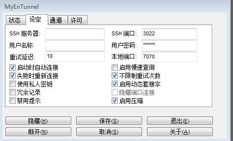
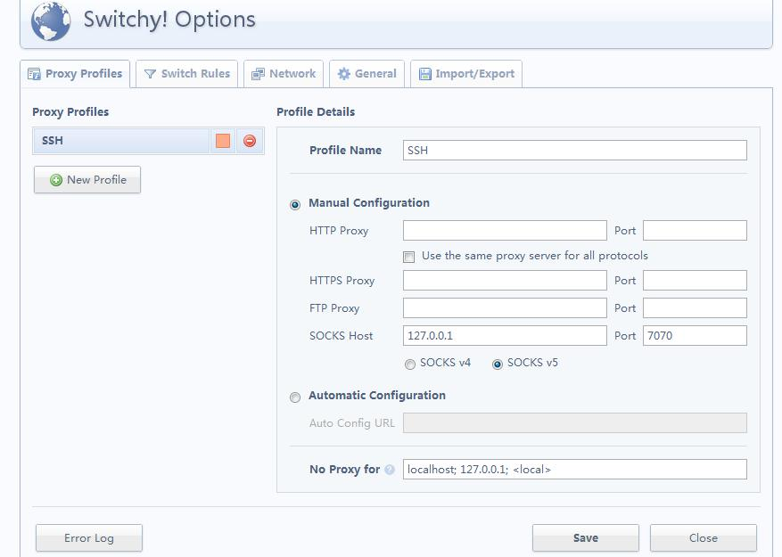
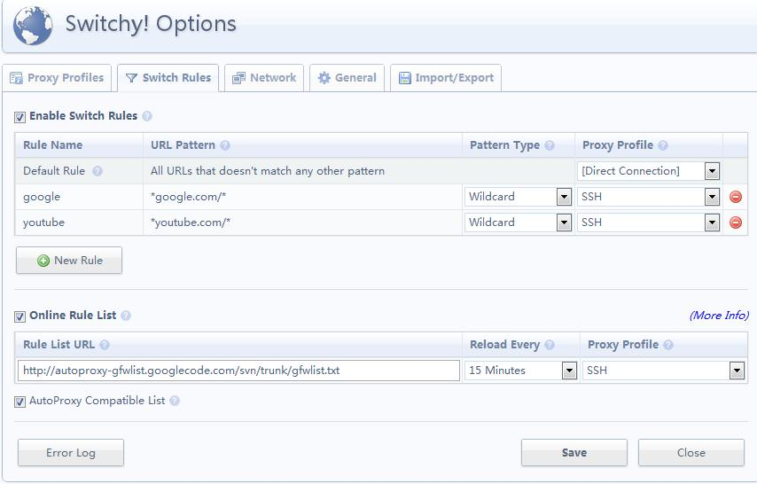

ssh+myEntunnel+chrome+proxy switchy翻墙
2011-08-01
在windows/win7下如何翻墙？告诉你答案：ssh+myEntunnel+chrome+proxy switchy插件翻墙。
1、注册SSH账号
SSH是建立在应用层和传输层基础上的提供可靠传输的安全协议。在这里您首先需要去注册一个SSH代理的账号，一般是几块钱一个月的就挺好的了，当然也有免费注册的，不过免费的可能速度不是很快或者连接不稳定。注册SSH的网址我就不发了，不然就有广告的嫌疑了。自己到网上一搜一堆的那种。要是实在找不到的可以通过邮箱54xiaowoniu@sina.cn跟我联系，我告诉你怎么注册。基本上15分钟搞定。
2、下载MyEntunnel
MyEntunnel是用来登录SSH服务器并在本机自动架设一个socks5代理的软件，下载并安装Myentunnel运行。
在桌面右下角任务栏上出现了黄色的锁，说明还没连接上。右击显示，作如下设置：

这里，SSH服务器栏填你在上一步中注册SSH账号的服务器地址。一般你注册好SSH账号后服务器地址，SSH端口，用户名和密码都是知道了的，相应地填上就可以了。本地端口填7070,这个要和浏览器Chrome，Proxy switchy的一致，这个下面会讲到。
另外，记得勾上图中的那几个选项，比如失败自动重连什么的。设置好后再重新连接，黄色的锁就会变成绿色的，说明已经连接上了。好，下面设置浏览器。
3、下载谷歌浏览器Chrome
如果你不是使用谷歌浏览器的话。其他的浏览器像Firefox也可以的，只是要使用的插件不一样而已。IE估计不行，我没用过，因为我印象中IE只能全局设置代理的，没有像Chrome和FireFox一样丰富的插件资源。还有，如果你不想用Chrome或Firefox的话，可以试试Chromium，这是Chrome的开发版本，也很好用。也有proxy switchy插件的。
4、安装proxy switch
打开Chrome浏览器，在谷歌网上应用商店搜索proxy switchy,点击安装即可。有中文版的proxy switchy。这里附上下载地址：
https://chrome.google.com/webstore/detail/caehdcpeofiiigpdhbabniblemipncjj?hl=zh-CN"
安装完成后重启Chrome，您会发现地址栏邮编多了个地球一样的插件，这个就是proxy switchy插件了。右击——>选项，打开设置：
在Proxy Profiles标签栏中，新建一个名为SSH的profile,设置如下：
这里端口是7070，跟上面的一致。代理选SOCKS v5

可以按照下图中添加自己想要的URL规则，这里我只加了google和youtube的两个规则。 在线的RUL规则栏填：
http://autoproxy-gfwlist.googlecode.com/svn/trunk/gfwlist.txt
频率选15min，Profile选刚才建的SSH。

好了，保存一下先。左击地址栏右边的proxy switcyh插件，选择SSH。在地址栏上输入:www.youtube.com，回车，你看到了什么？对的，你已经翻越了神奇的GFW了。
Category: Others Tagged: proxy switchy翻墙 myEntunnel翻墙 ssh翻墙